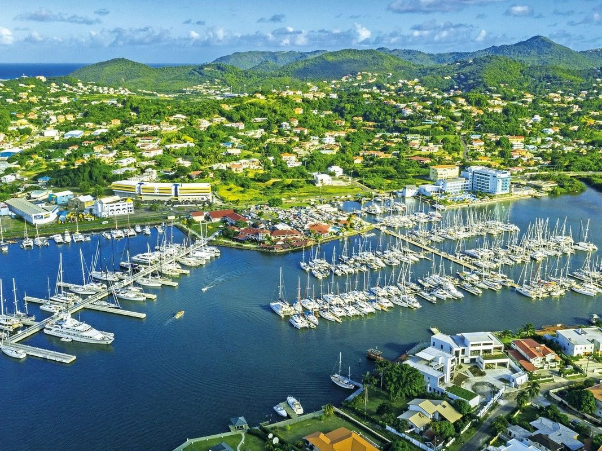

Rehberi Keşfedin
Saint Lucia'da iş yapmak hakkında bilmeniz gereken her şey
Ülke Genel Bakışı
Coğrafya, yönetim, ekonomi, altyapı ve St. Lucia'yı bir iş destinasyonu olarak anlamak için bilmeniz gereken her şey.
- 10 idari bölge
- Doğu Karayip Doları (XCD)
- İngilizce konuşulan, ortak hukuk sistemi
İş Kurulumu
Şirket türlerinden gerekli belgelere kadar işinizi kayıt ettirmek ve kurmak için adım adım rehber.
- IBC, LLC, şahıs şirketi
- 48-72 saatte kayıt
- IBC'ler için asgari sermaye yok
Hukuki & Vergi Çerçevesi
Vergi oranları, iş hukuku, mülk düzenlemeleri, çalışma izinleri ve tüm düzenleyici mevzuat.
- %30 kurumlar vergisi (IBC'ler için %0)
- %12,5 standart KDV oranı
- 15 yıla kadar vergi muafiyeti
Önemli Sektörler
Turizm, tarım, yaratıcı endüstriler, yenilenebilir enerji, BPO ve gelişmekte olan fırsatlar.
- Yıllık 900 binden fazla ziyaretçi
- Büyüyen teknoloji/BPO sektörü
- Yenilenebilir enerji hamlesi
Harita & Bölgeler
İnteraktif harita, bölge profilleri, önemli konumlar, limanlar, havaalanları ve iş bölgeleri.
- Castries - Başkent & ana liman
- Vieux Fort - Uluslararası havaalanı
- Gros Islet - Turizm merkezi
Yatırım Yoluyla Vatandaşlık
Yatırım yoluyla ikinci pasaport. $240.000'dan başlayan 4 farklı yol. 145'ten fazla ülkeye vizesiz erişim.
- NEF bağışı $240.000'dan başlayan
- Gayrimenkul $300.000'dan başlayan
- 6-12 ay işlem süresi
Yaşam Maliyeti
Konut, gıda, faturalar, ulaşım, sağlık masrafları ve pratik yerleşim tavsiyeleri.
- Aylık bütçe dökümleri
- Kira & gayrimenkul fiyatları
- Sağlık & eğitim
Etkinlikler & Takvim
Resmi tatiller, festivaller, iş etkinlikleri, mevsimsel kalıplar ve kültürel görgü kuralları.
- 13 resmi tatil
- Caz Festivali, Karnaval, Jounen Kweyol
- İş kültürü rehberi
İş Rehberi
Gerçek işletme listeleri: hukuk büroları, muhasebeciler, bankalar, emlakçılar, IBC acenteleri ve daha fazlası.
- Devlet kurumları
- Profesyonel hizmetler
- Oteller & konferans mekanları
Sıkça Sorulan Sorular
İş kaydı, vergiler, mülk, göçmenlik ve günlük yaşam hakkında sık sorulan sorulara hızlı cevaplar.
- İş kurulumu & kayıt
- Vergi & hukuk soruları
- Pratik ipuçları & CARICOM ticareti
CARICOM & Ticaret
Ticaret anlaşmaları, CARICOM tek pazar erişimi, ihracat fırsatları ve St. Lucia'yı Karayipler üssü olarak kullanma.
- CSME & OECS Ekonomik Birliği
- AB, ABD, Kanada ticaret anlaşmaları
- İhracat/ithalat prosedürleri
Yatırım Kontrol Listesi
Saint Lucia'da işinizi kayıt ettirmek ve başlatmak için adım adım eylem planı.
- Yatırım öncesi durum tespiti
- Kayıt adımları & formlar
- Kayıt sonrası kurulum
Dış Kaynaklar
Resmi devlet web siteleri, uluslararası kuruluşlar, veritabanları ve faydalı dış bağlantılar.
- Devlet portalları & siciller
- Uluslararası veri kaynakları
- İş destek kuruluşları

Hükümet & Siyaset
Siyasi liderlik, kabine, parlamento yapısı, seçim sonuçları, yargı ve düzenleyici kurumlar.
- Başbakan Philip J. Pierre (SLP, 2025 yeniden seçildi)
- 17 sandalyeli Temsilciler Meclisi
- CCJ nihai temyiz mahkemesi
Göç & Vizeler
Çalışma izinleri, oturma seçenekleri, vize gereksinimleri, kalış uzatmaları & daimi oturma yolları.
- Çalışma izni kategorileri & ücretleri
- CARICOM Beceri Sertifikası
- Daimi oturma yolları
Gayrimenkul
Mülk yatırımı, Yabancı Arazi Ruhsatı, satın alma süreci & geliştirme projeleri
Girişimcilik
İş kuluçkaları, finansman kaynakları, KOBİ destek programları & ortak çalışma alanları
Gurbetçi & Göçebe Rehberi
Taşınma, uzaktan çalışma, bankacılık, sağlık, kargo & yabancılar için günlük yaşam